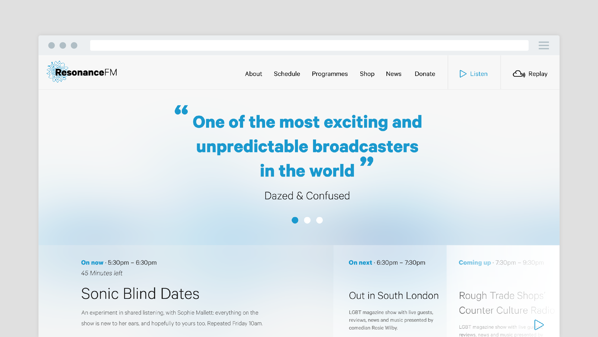
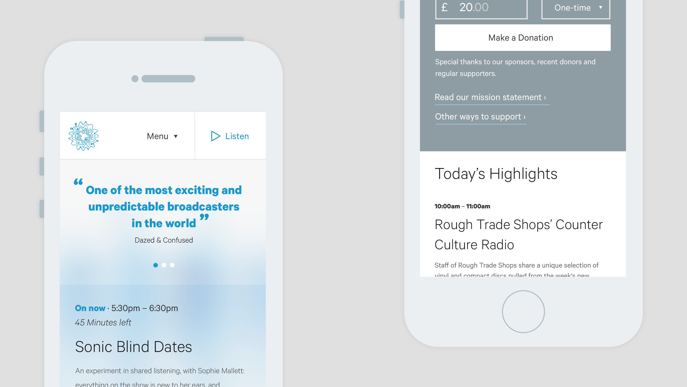

ResonanceFM
We worked closely with Resonance to relaunch their online offering. Producing an easy to manage but expansive new website allowing users to engage with Resonances programming in a way not previously possible. A key goal was to help increase the donations taken, we did this by developing new journeys that cut donation time by two thirds alongside incorporating Stripe and GiftAid.
Visit ResonanceFM

